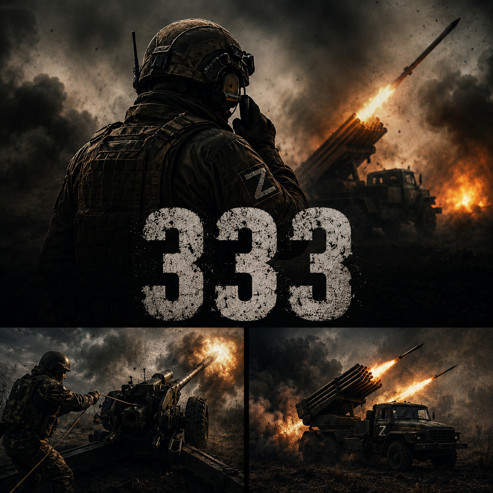

333
Нас не видно, нас слышно.
Слушать на музыкальных площадках ↗АВТОРСКИЙ ПРОЕКТ
Меня зовут Вадим. Помимо персональных песен,
я выпускаю свои треки — в разных настроениях и жанрах.

Нас не видно, нас слышно.
Слушать на музыкальных площадках ↗Это не шум — это я.
Слушать на музыкальных площадках ↗Мы часто носим маски.
Слушать на музыкальных площадках ↗